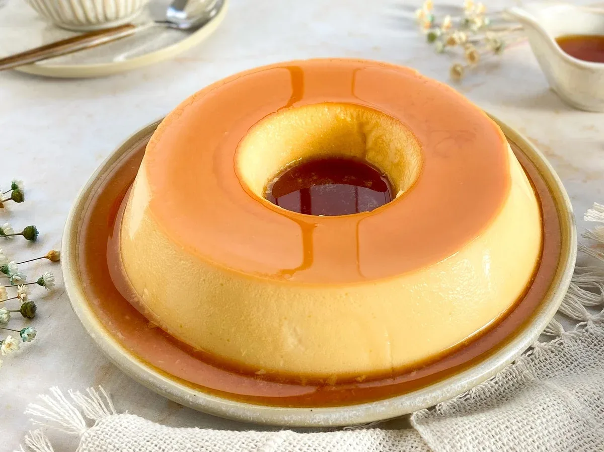

Pudim de leite condensado
Sobremesa cremosa que combina com almoços de família e datas especiais.
Preparo1h20
Rendimento8 porções
DificuldadeMédia

Ingredientes
Modo de preparo
- Derreta o açúcar em uma panela até formar uma calda dourada.
- Espalhe a calda em uma forma de pudim.
- Bata o leite condensado, o leite e os ovos.
- Despeje na forma e asse em banho-maria até firmar. Espere esfriar antes de desenformar.
Dica: Prepare com algumas horas de antecedência para servir bem gelado.